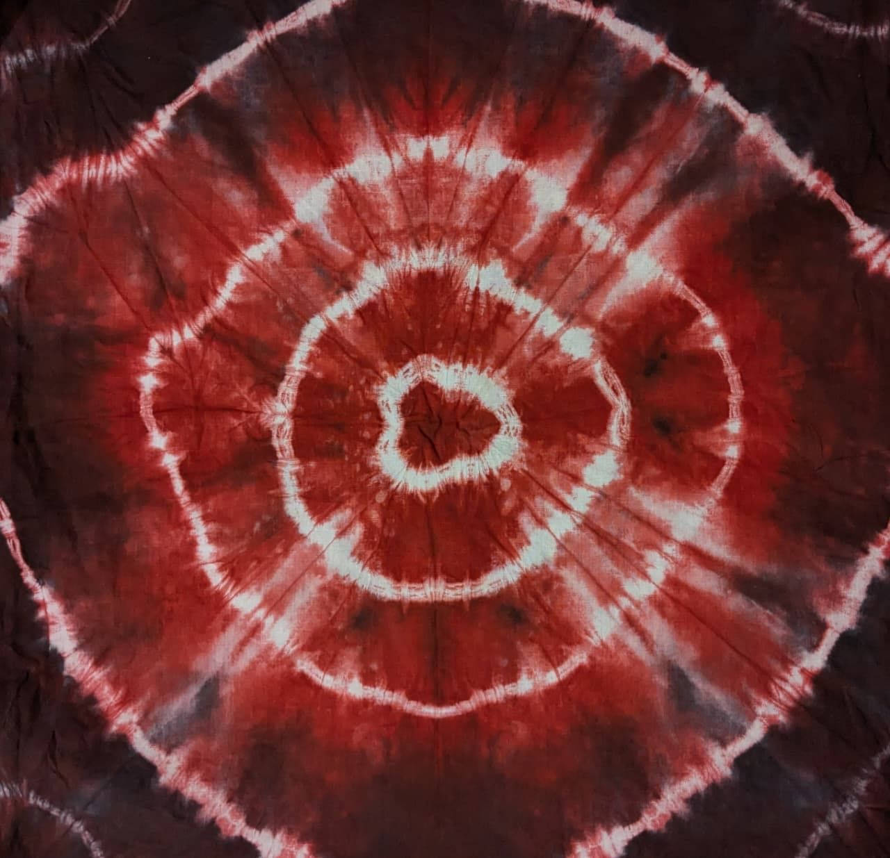

A hands-on study of traditional Indian surface embellishment — embroidery, batik, tie-dye, and a dupatta of nearly four hundred singularly tied bandhani dots.

As part of a surface embellishment module, I explored and applied a variety of traditional Indian textile techniques — embroidery, batik, tie-dye, and bandhani. The numerous explorations let me understand how colour, texture and pattern transform through different materials, stitches and dyeing processes.
Each technique demanded a different muscle: the precision of embroidery, the temperature-led control of batik wax, the folded geometry of tie-dye, and the meditative repetition of tying bandhani dots one by one. The learning lived in the doing — testing combinations, swatch after swatch, until a vocabulary started to form.
What I took away from the module is a deeper respect for handcrafted textiles and the people who make them — and a love for material experimentation that I'll carry into every project from here on.
The embroidery study began with a single bloom — a flora motif drawn from Kutchi mirror-work traditions, then translated stitch by stitch onto deep aubergine cotton. Chain, herringbone, satin and shisha mirrors layered together, each leaf and petal in a different colour and stitch family.
Mirror-work flora study — the central shisha mirror is anchored with a buttonhole-stitch frame; petals and leaves use long-and-short, chain and herringbone fills. The thread plan was set first on paper, then committed to cloth in a single sitting.
The resist-dye trials moved between two sister disciplines — batik (wax as resist) and tie-dye (cloth itself, folded and bound, as resist). Both rely on the same essential idea: keep the dye out of certain places, and the pattern is what's left behind.

Two resist-dye samples — left, a single large medallion folded from the centre point and bound in concentric rings; right, a banded shibori in indigo and rust, each stripe pleated and stitched before dipping. Same logic, different geometry.
The final piece was a full dupatta in bandhani — the Gujarati art of resist-dyeing through tiny tied points. Each dot is a knot: a single grain of cloth pinched up between thumb and finger, wound tightly with thread, and only later dyed and untied to reveal a constellation of white circles on colour. I tied roughly four hundred of them, one at a time.

Bandhani in progress — the back of the dupatta during the tying stage. Each pink bead marks a knot already secured; the surrounding loose threads will be wound, dipped, and then carefully unpicked once the dye has set. The process is mostly sitting still.
A pairing across techniques — a circle of knots, a circle of stitches. Two ways to make the same shape with the same patience.
After hours of testing limits, undoing knots, redoing stitches and chasing colour, what stayed with me wasn't the swatches — it was the rhythm of working slowly. Surface embellishment in the Indian tradition is, at its core, the practice of one decision at a time, repeated until a fabric has a voice.